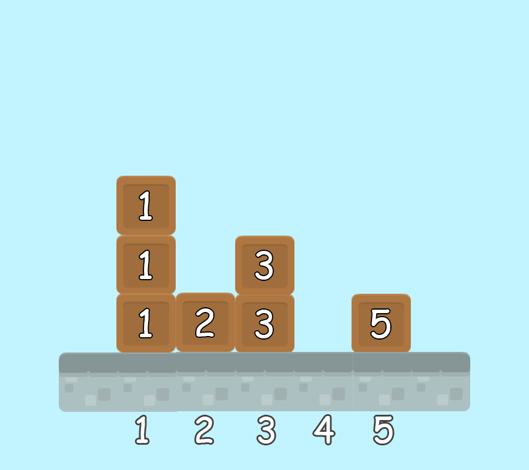

Pak Dengklek memiliki $N$ buah tumpukan balok yang dinomori dari $1$ hingga $N$. Tumpukan ke-$i$ tersusun atas $H_i$ balok. Pak Dengklek ingin mengambil balok-balok tersebut.
Pertama, Pak Dengklek berjalan menuju ke tumpukan dengan nomor terkecil yang terdapat balok. Kemudian Pak Dengklek akan mengikuti proses berikut:
Pak Dengklek memiliki $Q$ pertanyaan yang dinomori dari $1$ hingga $Q$. Untuk suatu pertanyaan $i$, Pak Dengklek memberikan sebuah bilangan bulat $K_i$, yang menyatakan bahwa Pak Dengklek ingin mengetahui nomor tumpukan dari balok yang ia ambil pada urutan ke-$K_i$. Lebih spesifiknya, balok yang Pak Dengklek ambil pada urutan ke-$1$ adalah balok yang pertama kali ia ambil. Bantu Pak Dengklek menjawab pertanyaan-pertanyaan tersebut!
Masukan diberikan dalam format berikut:
N H1 H2 ... HN Q K1 K2 . . . KQ
$Q$ baris: baris ke-$i$ berisi sebuah bilangan bulat yang menunjukkan nomor tumpukan dari balok yang Pak Dengklek ambil pada urutan ke-$K_i$.
Contoh ini diilustrasikan dengan animasi berikut. Nomor tumpukan dari balok yang Pak Dengklek ambil secara berturutan adalah $1, 2, 3, 1, 1, 3, 5$.

Untuk semua subsoal, berlaku: